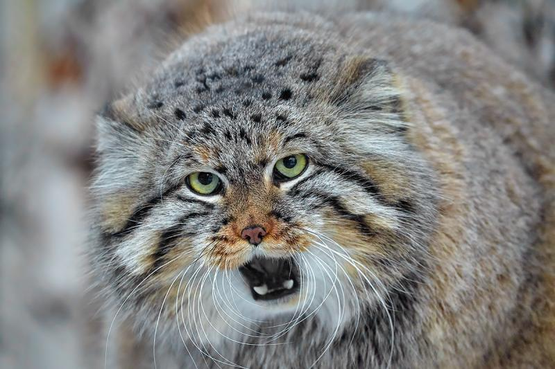
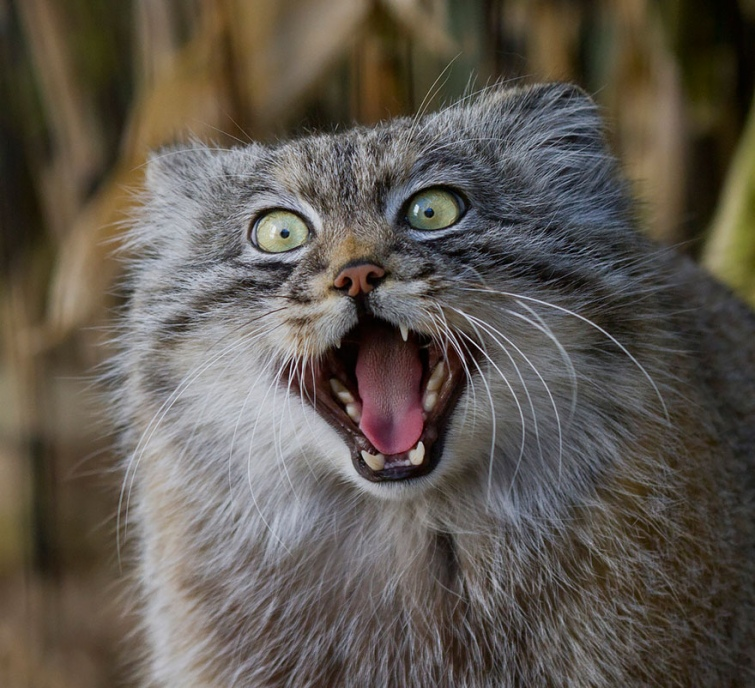

КІТ МАНУЛ

ІНФОРМАЦІЯ
Манул(лат. Otocolobus manul; від монг. мануул, «дикий кіт») — хижий ссавець родини котових, представник малих кішок. Зовнішністю і розмірами схожий на свійську кішку, але відрізняється коротшими коренастим тулубом і лапами, а також довгим густим хутром. Довжина голови й тулуба становить від 46 до 65 см, довжина хвоста — від 21 до 31 см, маса становить 2–5 кг. Хутро манула, що є найпухнастішим і найгустішим серед котових, має своєрідне нерівномірне забарвлення, причому основу в ньому зазвичай становить сірий колір, від темнішого до світлішого, а також домішка рудуватої чи охристої барви.
ПРО ЖИТТЯ
Манул живе на великому, але шматованому просторі в Азії: від Західного Ірану й Вірменії, Середньої Азії і деяких областей Сибіру до Забайкалля, Монголії та Тибету. Загальна чисельність оцінюється в 58 тисяч особин, найбільша популяція, як вважається, мешкає біля Монголії.
Манул живе в безлісних, посушливих областях із різко континентальним кліматом: у горах, степах і напівпустелях, де випадає мало снігу. Манул не пристосований до швидкого бігу, але добре маскується. Притулок влаштовує в ущелинах скель чи норах інших тварин. Харчується переважно пискухами та гризунами. У дикій природі розмножується раз на рік, вагітність триває 60–75 днів. Кошенята народжуються навесні, в приплоді найчастіше 3–4 кошеня, котрі за 4–5 місяців стають самостійними і залишають матір.
Вперше цей вид описав 1776 року пруський зоолог Петер-Симон Паллас, який спостерігав манула на узбережжі Каспійського моря. Наразі його включили до Червоного списку МСОП як вид в найменшій загрозі, але в минулому мав стан близький до загрозливого; також його включили до Червоних книг різних країн. Деяким популяціям загрожують браконьєрство, скорочення кормової бази через програми боротьби з гризунами, а також фрагментація оселищ внаслідок антропогенних чинників. Вивчений манул досить погано через свою скритність і малу чисельність. Манул міститься у зоопарках з початку 1950-х років, а розмножується — з 1960-х. На 2020 рік у зоопарках Європи міститься всього близько 100 особин.

ШЕРСТЬ І ЗАБАРВЛЕННЯ
Шерсть у манула м'яка, найпухнастіша і найщільніша серед котових; частково через нього манул виглядає досить масивним і присадкуватим. Максимальна щільність волосків — до 9 тисяч — досягається на спині; на нижній частині тулуба хутро рідкіше — 800 волосків на см². Довжина напрямного волосся може досягати 70 мм, причому найбільша довжина волосся досягається на нижній частині тулуба, а на спині волосся вдвічі коротше: це пояснює можливість манула повзати холодною землею і лежати на ній. Товщина волосся різниться від 17 мікронів для пухового волосся до 93 мікронів для напрямного волосся на спині. За літньої пори шерсть стає менш густою, ніж у зимовій.
Забарвлення хутра манула нерівномірне, основу в ньому становить сіра барва, від темнішої до світлішої, а також домішка рудуватої або вохристої. Оскільки волоски мають білий колір поблизу кінчиків та чорний — на самих вершинах, то складається враження білого, ніби крижаного нальоту на шерсті, і слабшого — чорного. Колір хутра на спині — сіріший, а з боків — вохристіший, найяскравіший вохристий колір спостерігається в області пахв і з боків шиї.
Одна з особливостей забарвлення манула полягає в тому, що по хребту не проходить виражена темна смуга, притаманна для кішок, спостерігається лише поступове потемніння до хребта. На спині манула, зазвичай у задній частині тулуба, знаходиться 6-7 поперечних темних смуг, найпомітніші на літній шерсті, ширина котрих становить близько одного сантиметра. Вони можуть мати різний колір та різну довжину.
Хвіст має сірий колір, крім чорного кінчика і темних поперечних (сповивальних) смуг, яких зазвичай 7 штук. Ноги загалом мають сірий колір, як спина і боки, з внутрішньої сторони — світліший. Нижня частина стоп — вохриста. Між пальцями шерсть коротка і не закриває подушечок. Передня частина живота переважно бура, волоски мають білі кінчики. Задня частина живота, груди і горло мають брудно-білий колір.
Верхня частина голови має сірий колір й усіяна чорними цятками. Навколо очей — область білого кольору, на підборідді і на нижній частині губ шерсть також біла, на верхніх губах — біла з іржавим відтінком. Бурці мають білий колір біля основи і чорний — на кінцях. Верхня частина носа біла. Від очей через щоки йдуть по дві чорні смуги: верхні продовжуються до вух, нижні проходять під вухами і продовжуються до шиї, решта щік до очей і вух — біла. Вібриси білого кольору.
Глибокі частини хутра по забарвленню схожі на такі у барханного кота. Здебільшого саме забарвлення глибоких частин хутра визначає зовнішній вигляд та колір різних частин тіла. Манул має досить сильну особисту мінливість забарвлення: наприклад, зустрічаються особини переважно охристого кольору, причому особини різного забарвлення локалізовані географічно.
СКЕЛЕТ
Бакулюм манула, зліва направо: верхня, бічна та нижня сторони
Морфологічні ознаки скелету помітно відрізняються від таких у інших дрібних котових. З одного боку, скелет виявляє плезіоморфні ознаки, а з іншого боку, наприклад, улаштування зубної системи спеціалізованіший до поїдання м'яса, ніж в інших котових, а будова вушних бульбашок — до проживання в пустелі.
Атлант дуже короткий, має маленькі крила, максимальна ширина складає 36,5 мм. Епістрофей високий і короткий. Трубчасті кістки маленькі та тонкі. Лопатка вузька. Плечова кістка має довжину близько 99–102 мм, ліктьова приблизно на 10 % довша. Довжина стегнової кістки — 101–108 мм, великогомілкова на 4 % довша. Бакулюм має подобу невеликої подовженої кістки, його довжина становить 3 мм. Основа трохи розширена, на ній знаходиться слабко виражений середній виступ.
Череп манула округлий, високий, має невеликі розміри — його найбільша довжина становить 87–95 мм для самців і 84–96 мм для самок, вилицева ширина — 66–74 мм для самців і 65–68 для самок. Виличні дуги широко розставлені, кісткове піднебіння коротке. Вушні бульбашки мають невеликий розмір і здуті. Череп манула схожий на череп барханного кота, але манулові ознаки котячого типу виражені сильніше і взагалі якнайбільше.
НАЗАД ДО МЕНЮ
ПЕРЕЙТИ ДО БЕНГАЛЬСЬКОГО ТИГРА